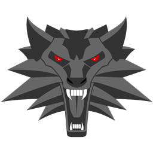

WitcherCraft
A faithful recreation of The Witcher universe within Minecraft. Signs, Alchemy, Monsters and more.
WitcherCraft is a NeoForge Minecraft mod that brings the world of The Witcher 3: Wild Hunt into the Minecraft engine. If you ever wanted to feel like Geralt while playing Minecraft — hunting monsters, brewing potions, casting Signs and donning Witcher School armor — this mod is for you.
The mod recreates the core RPG systems of The Witcher 3 from the ground up: a full Alchemy system with Potions, Decoctins, Oils and Bombs governed by a Toxicity mechanic, all five Witcher Signs as active abilities with custom particle effects, six Witcher School armor sets with unique School Effects, a multi-tab Skill Tree with over thirty perks, and a custom damage model replacing Minecraft's default combat. A Bestiary, Glossary, Meditation system and custom HUD round out the experience.
The mod is currently available on CurseForge and Modrinth and is actively being developed. The full rework brings significant improvements to all existing systems alongside new content.
New to WitcherCraft? Start here for tips and basics.
Learn to cast Aard, Igni, Quen, Yrden and Axii.
Brew potions, decoctins, oils and craft bombs.
Six school armor sets with unique effects.
Bestiary of creatures found across the world.
Recipes for every item in WitcherCraft.
Other mods from Red Bolt Media, available on CurseForge and Modrinth.
Devil May Cry weapons brought to Minecraft. Custom mechanics, sounds and effects for each weapon.
A Cyberpunk 2077-inspired mod adding new weapons, mechanics and items to Minecraft. Early development stage.
For bug reports, suggestions, or general enquiries, join the Discord server or open an issue on CurseForge. Discord is the fastest way to get a response.